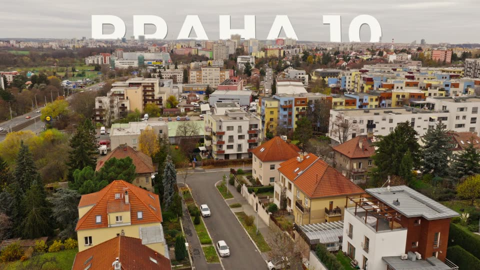
v prostoru · 0:00PRAHA 10Vyroste zpoza panoramatu, věže ho zakrývají.
Bartoš · Praha 10 – Hostivař · ke schválení
Verze 2 (23. 11. večer): titulek LOŽNICE je přetrackovaný (předtím ujížděl až o 10–20 px, teď drží na stěně do 1–2 px) a na záběru dronu nad zahradou se kreslí naše vyznačení zahrady. Titulek 4+KK je kvůli tomu vpravo dole.
Ahoj, tady je první várka k videu na šířku. Střih a barvy jsou tvoje beze změny, přidali jsme titulky v univerzálním stylu (bez vizitky makléře), hudbu s pořádným koncem, body zájmu z dronu a 3D mapu okolí. Komentář napsal ChatGPT a je zatím jen ve druhé verzi videa. U každého bloku je „Schvaluji“, připomínky piš přes tlačítko Komentář vlevo dole.
Ve videu jsou náhledy (web). Plné verze jsou v DaVinci: projekt „Bartoš-Hostivař 25fps“, timeline „Hostivař TITULKY v1 (kopie Timeline 1)“ a „… + VO + titulky řeči“. Tvoje „Timeline 1“ je netknutá.
Délka 1:21 podle tvého střihu. Hudba je ta stejná (harrak), jen z naší knihovny, a na konci jsme ji střihli o 20 taktů dopředu do závěrečné fráze, ať video dohraje do konce a neutne se uprostřed. Druhá verze má navíc komentář a titulky toho, co hlas říká.
Univerzální styl bez značky makléře: tenký bílý rámeček s průsvitnou grafitovou výplní (žádná plná „vlajka“), Montserrat. Trackované titulky sedí v prostoru a předměty v popředí je zakrývají: věže města, židle a stůl, postel, sloupek pergoly se záclonou. Každý titulek má jemný pop zvuk. Údaje jsou jen z inzerátu. Klikni na obrázek a video skočí na titulek.


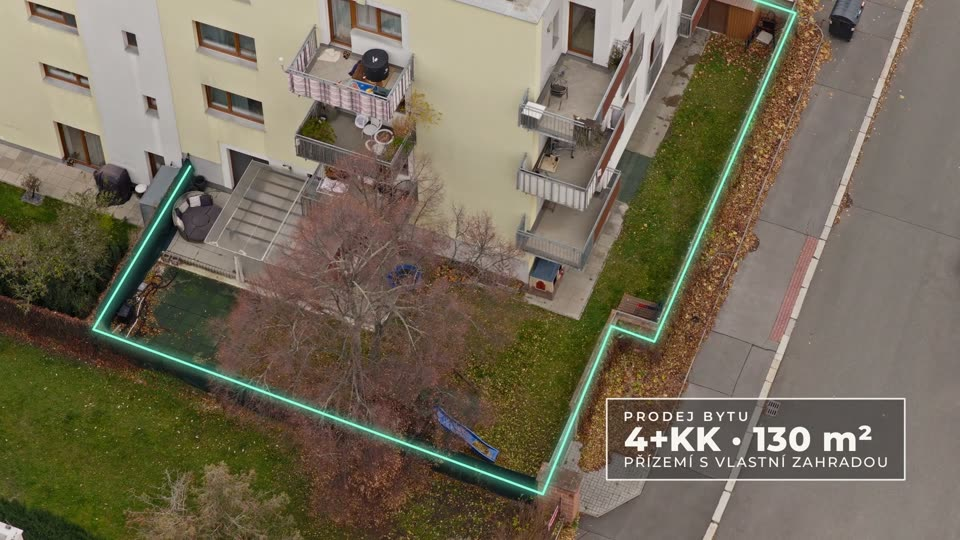
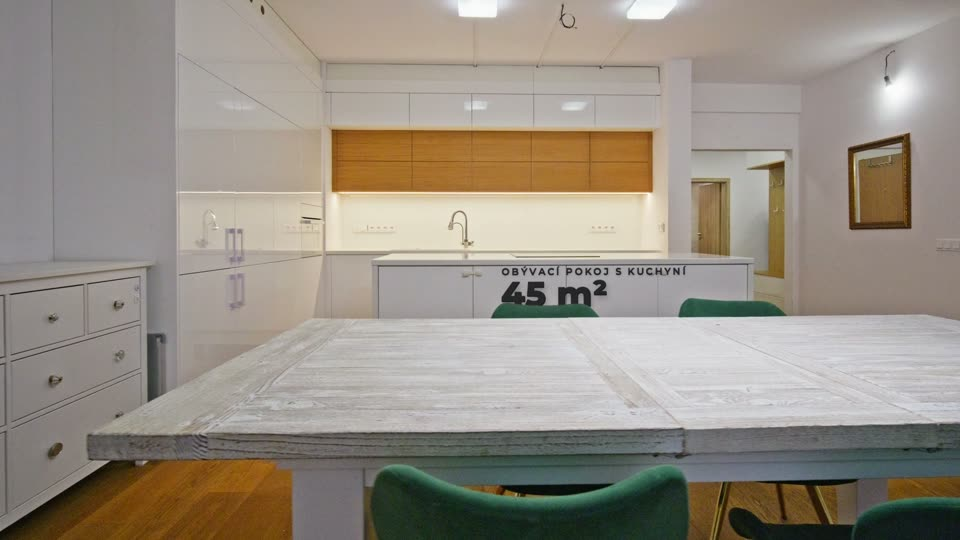
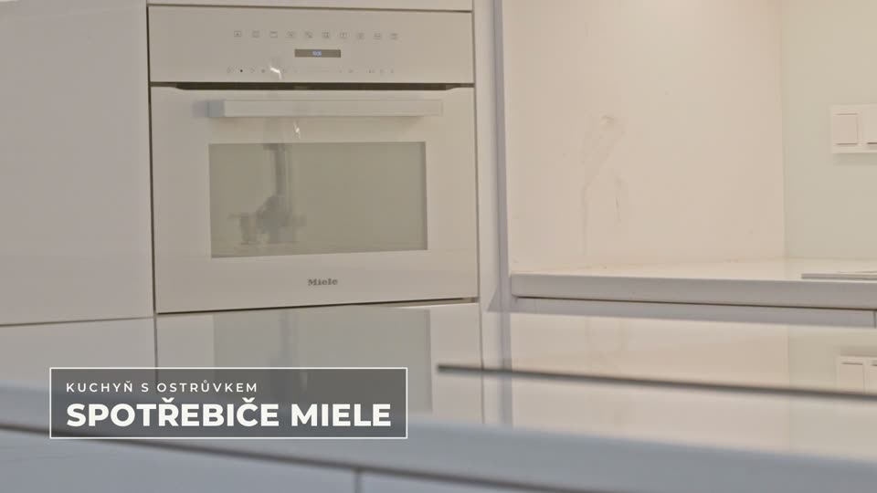

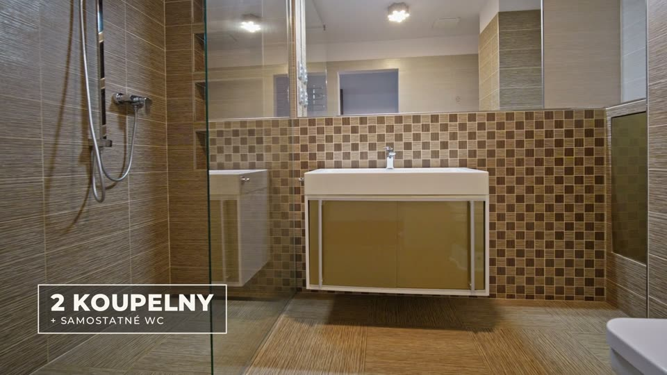
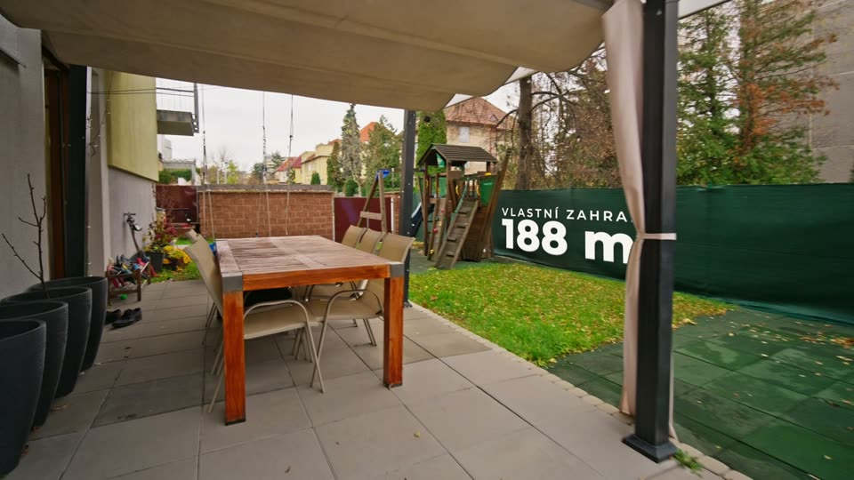
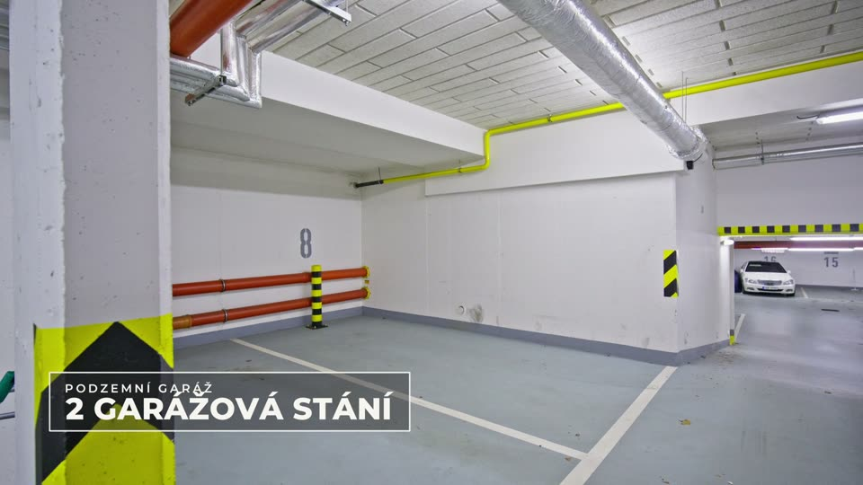
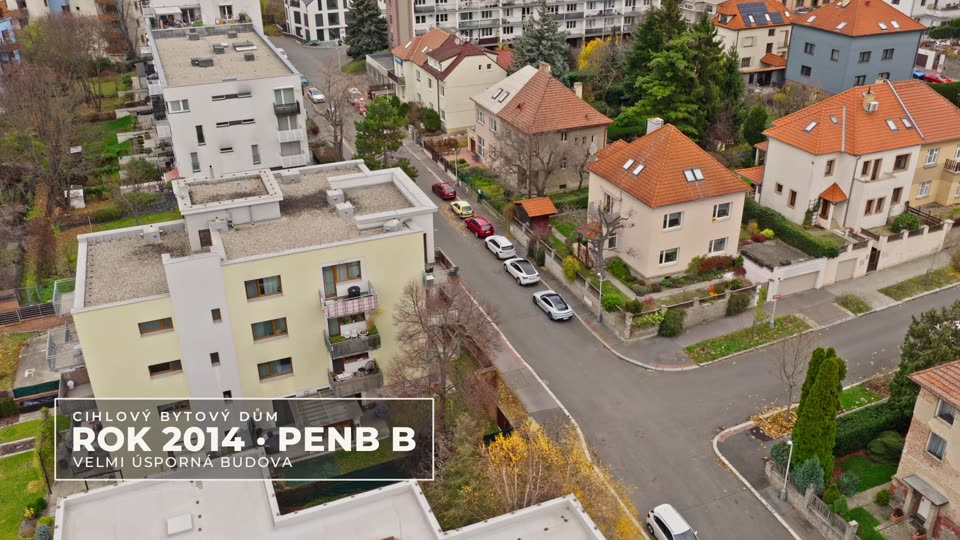
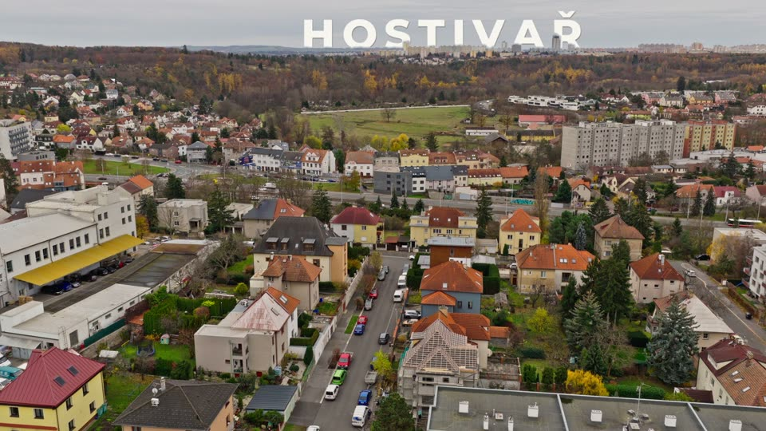
Dvě tvoje nabarvené fotky z dronu. Body jsou promítnuté podle polohy kamery z fotky a místa z OpenStreetMap, časy pěšky jsou změřené po cestách. Dům jsme ověřili ve dvou fotkách (GPS v inzerátu je jen na ulici, asi 55 m vedle).
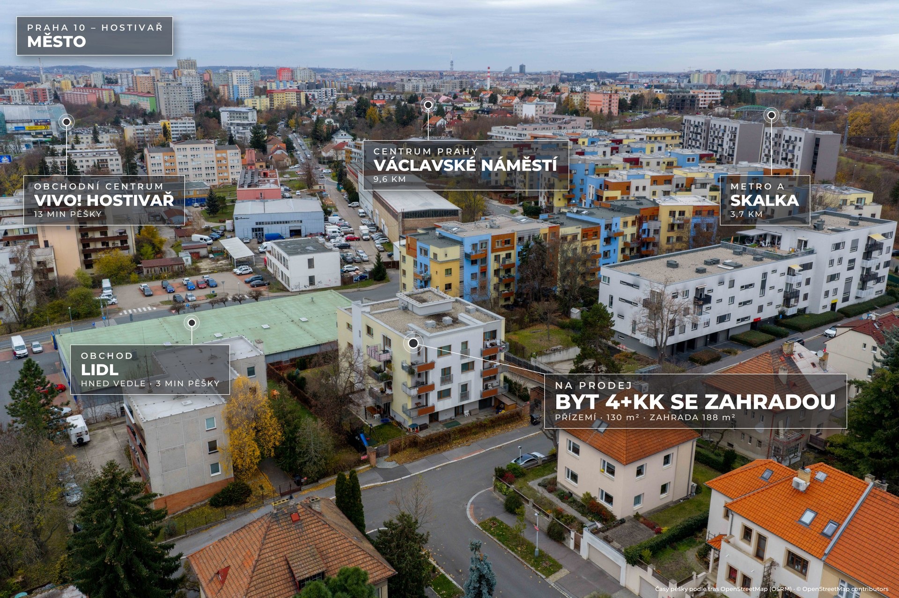
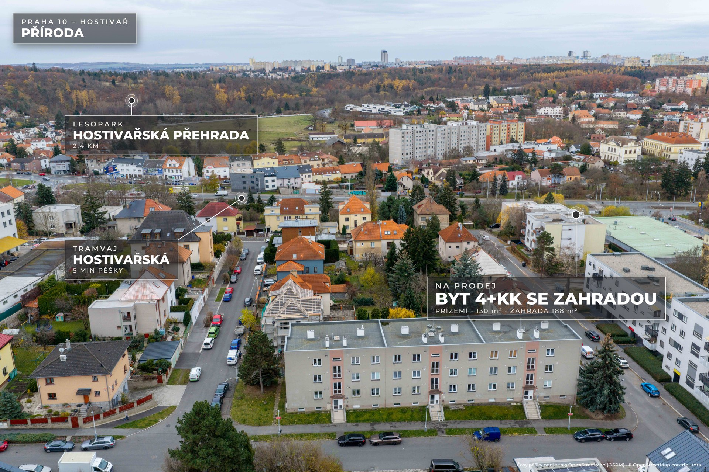
Časy pěšky podle tras OpenStreetMap (OSRM). Autem neuvádíme minuty, v Praze záleží na provozu.
Skutečné ortofoto ČÚZK na reliéfu, náklon na diorama a trasa k Hostivařské přehradě. Do videu jsme ji zatím nevkládali, střih zůstává tvůj. Hodí se jako samostatný záběr nebo obrázek do inzerátu.
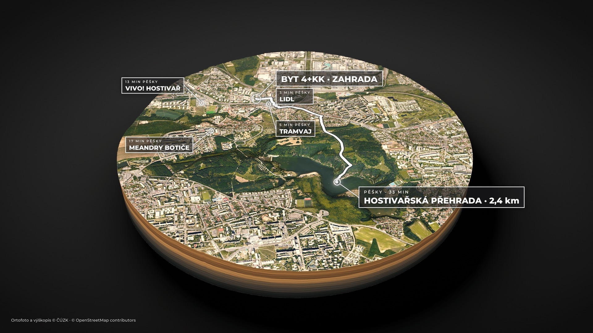
Text napsal ChatGPT podle faktů z inzerátu a časů střihu, my jsme do něj nepsali. Sám navrhl opravu „ve výhradním užívání“ u zahrady a stání a rok stavby nechal jen v titulku. Namluvené hlasem Pohádkář v ElevenLabs. Hlas začíná až po úvodním dronu a dozní v 1:20.
| 0:05 | V klidné části pražské Hostivaře na vás čeká prostorný byt čtyři plus ká ká, o rozloze sto třiceti metrů čtverečních. |
| 0:16 | S kuchyní vybavenou spotřebiči Miele. |
| 0:19 | Velkorysý obývací prostor nabízí dostatek místa pro společné chvíle. |
| 0:25 | Tři samostatné pokoje vám dávají svobodu vytvořit domov přesně podle vašich potřeb. |
| 0:32 | První koupelna nabízí vanu. |
| 0:35 | Ať už hledáte pohodlnou ložnici, dětský pokoj, nebo klidnou pracovnu, prostoru je tu dost. |
| 0:43 | Praktické zázemí doplňuje prostorná předsíň, samostatná toaleta a komora. Byt je navíc částečně zařízený. |
| 0:53 | Druhá koupelna se sprchovým koutem přináší další pohodlí pro každodenní život. |
| 1:00 | Skutečným bonusem je zahrada o sto osmdesáti osmi metrech čtverečních ve výhradním užívání. Pro odpočinek i dětské hry. |
| 1:08 | Přímo u vašeho domova. |
| 1:11 | Ve výhradním užívání jsou také dvě garážová stání. |
| 1:15 | Klidná Hostivař, přehrada a lesopark v širším okolí. Přijďte na prohlídku. |
Titulky řeči jsou dole uprostřed. Když je zrovna vidět rámečkový titulek vlevo dole, jdou doprava, takže se nepotkají. Trackované titulky jsou výš v obraze.
V tvé timeline byla „harrak(Ref).mp3“ z cizího počítače, takže byla offline. V naší knihovně je pod stejným jménem víckrát, ta tvoje je varianta dcbdb9cc (stejná délka 2:19,7, zvuk se shoduje na 100 %). Přelinkovali jsme ji. Skladba sama končí natvrdo v 2:17, proto jsme ji v 1:08 střihli na kopáku o 20 taktů dopředu: přijde break a závěrečná fráze, která dohraje na posledním dronu. Původní hudba v kopii timeline zůstala, jen je vypnutá.